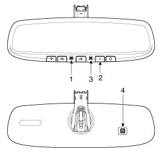

Mirrors: Description and Operation
Description
The ECM (Electro Chromatic inside rear view Mirror) is for dimming the reflecting light from a vehicle behind at night, Preventing glare from the light. The forward facing sensor detects brightness of the surroundings, while the rearward looking sensor detects the strength of the reflecting light and adjusts the reflexibility of the mirror in the range of 7 - 85%. But, when the reverse gear is engaged, it stops functioning.
1. The forward facing sensor sees if the brightness of the surroundings is low enough for the mirror to operate its function.
2. The rearward looking sensor detects glaring of the reflecting light from a vehicle behind.
3. The ECM is darkened to the level as determined by the rearward looking sensor. When the glaring is no longer detected, the mirror stops functioning.
1. LED indicator
2. ON/OFF Switch
3. Rearward looking sensor
4. Forward looking sensor

Automatic-dimming Function
To protect your vision during nighttime driving, your mirror will automatically dim upon detecting glare from the vehicles traveling behind you. The auto-dimming function can be controlled by the Dimming ON/OFF Button :
1. Pressing and holding the Feature Control button for more than 3 but less than 6 seconds turns the auto-dimming function OFF which is indicated by the green Status Indicator LED turning off.
2. Pressing and holding the Feature Control button again for more than 3 but less than 6 seconds turns the auto-dimming function ON which is indicated by the green Status Indicator LED turning on.
NOTE:
The mirror defaults to the "ON" position each time the vehicle is started.